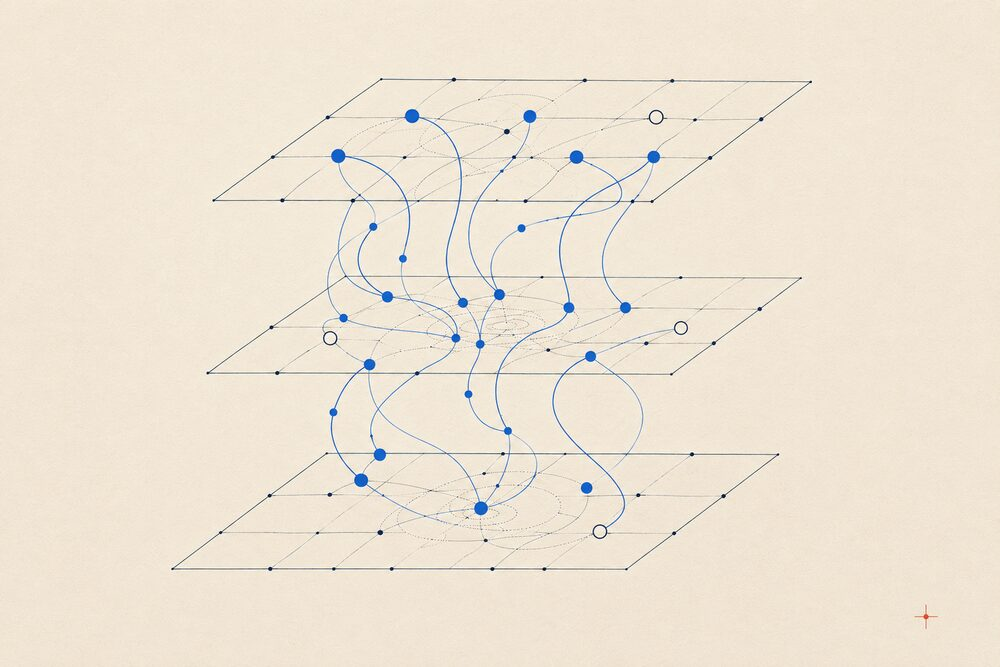

MIRAGE-Persist
Studying how security failures can persist across long-running, tool-using AI systems and how they should be evaluated reliably.
Trustworthy AI Researcher | Lecturer
I work on LLM safety, machine unlearning, mechanistic interpretability, secure agents, reproducibility, and reliable AI for health.

Ongoing inquiry
High-level descriptions of research currently under development. Technical details will be shared when the corresponding studies are ready.
Studying how security failures can persist across long-running, tool-using AI systems and how they should be evaluated reliably.
Exploring representation-aware methods for understanding and defending AI agents against injected or manipulated objectives.
Reproducing and stress-testing mechanistic explanations of attention sinks across implementations and experimental settings.
Investigating whether compact activation-level interventions can improve the reliability of compressed language models.
Studying internal model signals that may help detect and mitigate compromised behavior in mixture-of-experts language models.
Developing interpretable sleep-staging systems that remain dependable across datasets, settings, and subject populations.
Research record
Peer-reviewed work, manuscripts, reproducibility research, and open-source tools.
Dual-mode visual explanations for attention-based sleep-stage classification.
A reproduction and reliability analysis of a proposed GPT-2 attention-sink circuit.
An AI-assisted workspace for exploring, summarizing, and connecting research literature.
Live project ↗A local-first research companion for structured paper analysis and scholarly debate.
GitHub ↗Academic practice
Teaching computer science through concept-first explanations, practical examples, and accessible technical communication.
Teaching computer science and supporting students through lectures, assessments, consultation, and feedback.
Supported Data Structures and Electronic Devices courses through laboratory teaching, grading, assessment, and mentoring for more than 100 students.
Notebook entries
Recent research, teaching, and academic milestones.
Continued the BlackboxNLP reproducibility paper on attention-sink circuits and implementation sensitivity.
Began experimental work on new directions in secure, long-horizon AI agents.
Joined Daffodil International University as Contractual Faculty.
Submitted my representation-aware machine unlearning work to ACL Rolling Review.
Completed my B.Sc. in CSE from BRAC University with a CGPA of 3.95/4.00.
Published GradG-AttnSleep at IEEE ICITEE.
Correspondence
I am open to research discussions and academic collaboration in trustworthy AI, LLM safety, interpretability, and AI for health.
Send an Email